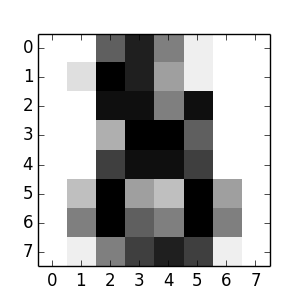

An introduction to machine learning with scikit-learn¶
Section contents
In this section, we introduce the machine learning vocabulary that we use through-out scikit-learn and give a simple learning example.
Machine learning: the problem setting¶
In general, a learning problem considers a set of n samples of data and then tries to predict properties of unknown data. If each sample is more than a single number and, for instance, a multi-dimensional entry (aka multivariate data), is it said to have several attributes or features.
We can separate learning problems in a few large categories:
supervised learning, in which the data comes with additional attributes that we want to predict (Click here to go to the scikit-learn supervised learning page).This problem can be either:
- classification: samples belong to two or more classes and we want to learn from already labeled data how to predict the class of unlabeled data. An example of classification problem would be the handwritten digit recognition example, in which the aim is to assign each input vector to one of a finite number of discrete categories. Another way to think of classification is as a discrete (as opposed to continuous) form of supervised learning where one has a limited number of categories and for each of the n samples provided, one is to try to label them with the correct category or class.
- regression: if the desired output consists of one or more continuous variables, then the task is called regression. An example of a regression problem would be the prediction of the length of a salmon as a function of its age and weight.
unsupervised learning, in which the training data consists of a set of input vectors x without any corresponding target values. The goal in such problems may be to discover groups of similar examples within the data, where it is called clustering, or to determine the distribution of data within the input space, known as density estimation, or to project the data from a high-dimensional space down to two or three dimensions for the purpose of visualization (Click here to go to the Scikit-Learn unsupervised learning page).
Training set and testing set
Machine learning is about learning some properties of a data set and applying them to new data. This is why a common practice in machine learning to evaluate an algorithm is to split the data at hand into two sets, one that we call the training set on which we learn data properties and one that we call the testing set on which we test these properties.
Loading an example dataset¶
scikit-learn comes with a few standard datasets, for instance the iris and digits datasets for classification and the boston house prices dataset for regression.:
>>> from sklearn import datasets
>>> iris = datasets.load_iris()
>>> digits = datasets.load_digits()
A dataset is a dictionary-like object that holds all the data and some metadata about the data. This data is stored in the .data member, which is a n_samples, n_features array. In the case of supervised problem, explanatory variables are stored in the .target member. More details on the different datasets can be found in the dedicated section.
For instance, in the case of the digits dataset, digits.data gives access to the features that can be used to classify the digits samples:
>>> print(digits.data)
[[ 0. 0. 5. ..., 0. 0. 0.]
[ 0. 0. 0. ..., 10. 0. 0.]
[ 0. 0. 0. ..., 16. 9. 0.]
...,
[ 0. 0. 1. ..., 6. 0. 0.]
[ 0. 0. 2. ..., 12. 0. 0.]
[ 0. 0. 10. ..., 12. 1. 0.]]
and digits.target gives the ground truth for the digit dataset, that is the number corresponding to each digit image that we are trying to learn:
>>> digits.target
array([0, 1, 2, ..., 8, 9, 8])
Shape of the data arrays
The data is always a 2D array, n_samples, n_features, although the original data may have had a different shape. In the case of the digits, each original sample is an image of shape 8, 8 and can be accessed using:
>>> digits.images[0]
array([[ 0., 0., 5., 13., 9., 1., 0., 0.],
[ 0., 0., 13., 15., 10., 15., 5., 0.],
[ 0., 3., 15., 2., 0., 11., 8., 0.],
[ 0., 4., 12., 0., 0., 8., 8., 0.],
[ 0., 5., 8., 0., 0., 9., 8., 0.],
[ 0., 4., 11., 0., 1., 12., 7., 0.],
[ 0., 2., 14., 5., 10., 12., 0., 0.],
[ 0., 0., 6., 13., 10., 0., 0., 0.]])
The simple example on this dataset illustrates how starting from the original problem one can shape the data for consumption in the scikit-learn.
Learning and predicting¶
In the case of the digits dataset, the task is to predict, given an image, which digit it represents. We are given samples of each of the 10 possible classes (the digits zero through nine) on which we fit an estimator to be able to predict the classes to which unseen samples belong.
In scikit-learn, an estimator for classification is a Python object that implements the methods fit(X, y) and predict(T).
An example of an estimator is the class sklearn.svm.SVC that implements support vector classification. The constructor of an estimator takes as arguments the parameters of the model, but for the time being, we will consider the estimator as a black box:
>>> from sklearn import svm
>>> clf = svm.SVC(gamma=0.001, C=100.)
Choosing the parameters of the model
In this example we set the value of gamma manually. It is possible to automatically find good values for the parameters by using tools such as grid search and cross validation.
We call our estimator instance clf as it is a classifier. It now must be fitted to the model, that is, it must learn from the model. This is done by passing our training set to the fit method. As a training set, let us use all the images of our dataset apart from the last one:
>>> clf.fit(digits.data[:-1], digits.target[:-1])
SVC(C=100.0, cache_size=200, class_weight=None, coef0=0.0, degree=3,
gamma=0.001, kernel='rbf', max_iter=-1, probability=False,
random_state=None, shrinking=True, tol=0.001, verbose=False)
Now you can predict new values, in particular, we can ask to the classifier what is the digit of our last image in the digits dataset, which we have not used to train the classifier:
>>> clf.predict(digits.data[-1])
array([8])
The corresponding image is the following:
As you can see, it is a challenging task: the images are of poor resolution. Do you agree with the classifier?
A complete example of this classification problem is available as an example that you can run and study: Recognizing hand-written digits.
Model persistence¶
It is possible to save a model in the scikit by using Python’s built-in persistence model, namely pickle:
>>> from sklearn import svm
>>> from sklearn import datasets
>>> clf = svm.SVC()
>>> iris = datasets.load_iris()
>>> X, y = iris.data, iris.target
>>> clf.fit(X, y)
SVC(C=1.0, cache_size=200, class_weight=None, coef0=0.0, degree=3, gamma=0.0,
kernel='rbf', max_iter=-1, probability=False, random_state=None,
shrinking=True, tol=0.001, verbose=False)
>>> import pickle
>>> s = pickle.dumps(clf)
>>> clf2 = pickle.loads(s)
>>> clf2.predict(X[0])
array([0])
>>> y[0]
0
In the specific case of the scikit, it may be more interesting to use joblib’s replacement of pickle (joblib.dump & joblib.load), which is more efficient on big data, but can only pickle to the disk and not to a string:
>>> from sklearn.externals import joblib
>>> joblib.dump(clf, 'filename.pkl')